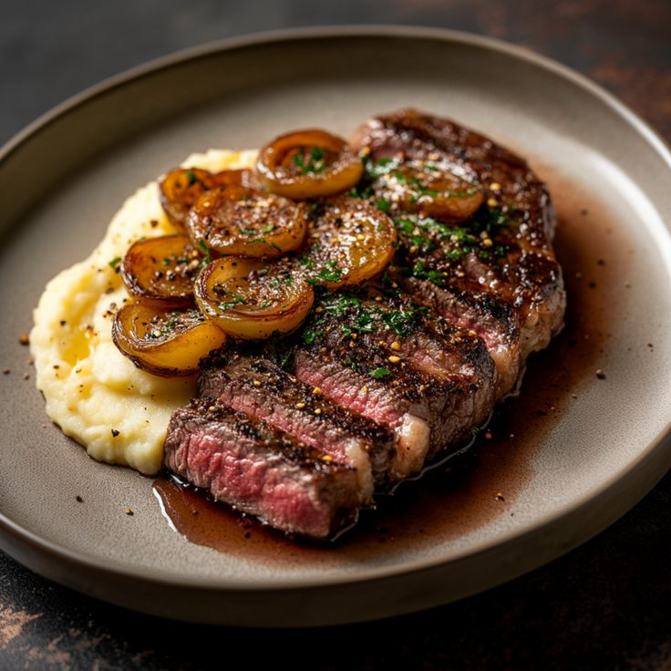
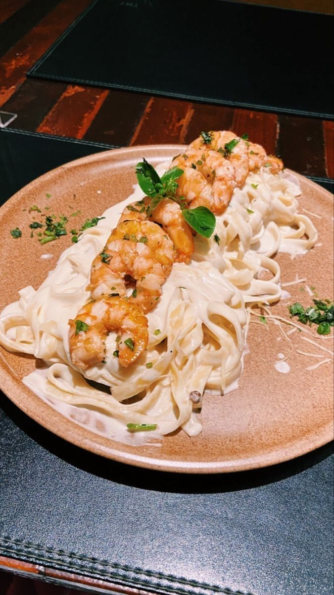
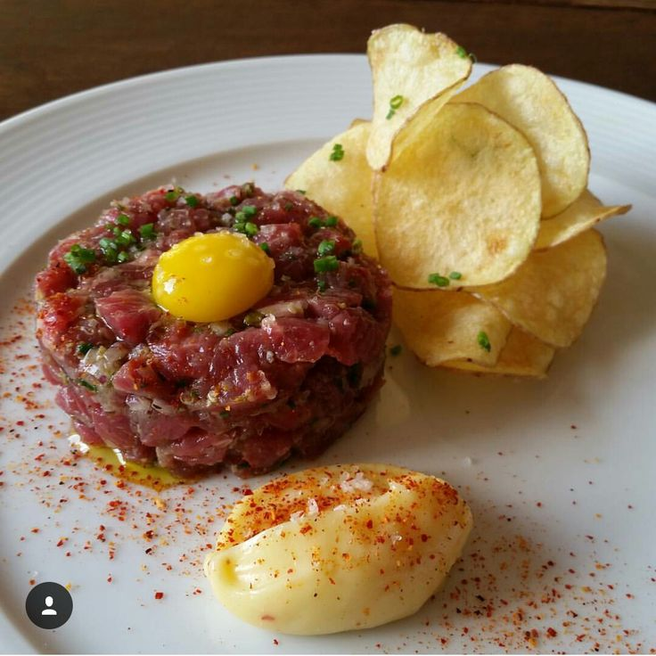
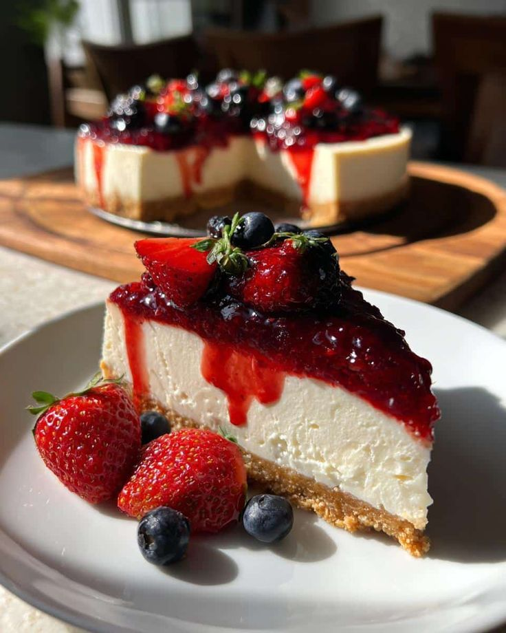
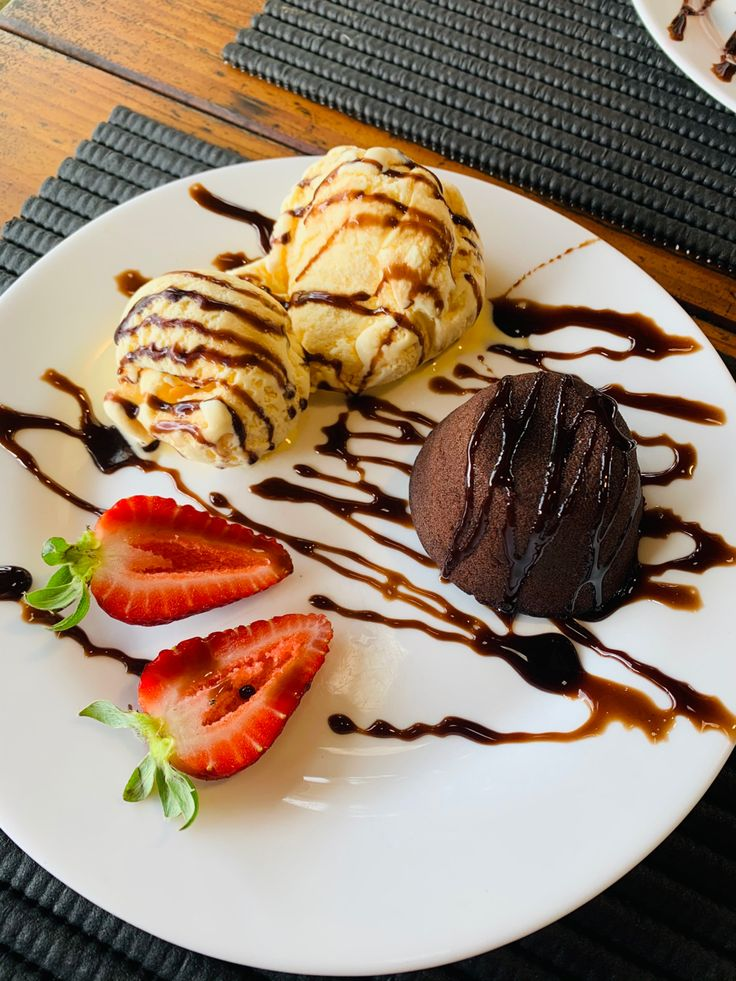
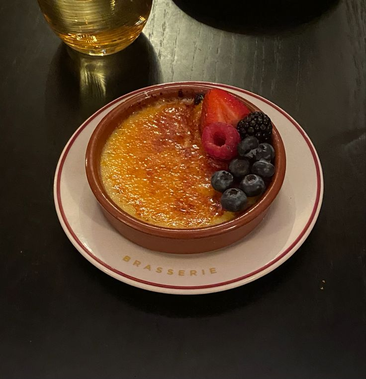

Paillard de filet

É um bifé de fíle batido até ficar bem fino e largo
Preço: R$68.00
É um bifé de fíle batido até ficar bem fino e largo
Preço: R$68.00
Arroz arbóreo ou carnaroli, cozido lentamente em caldo aromático de frutos do mar e vinho branco seco
Preço: R$48.00
É um prato clássico da culinária francesa feito com carne bovina crua de alta qualidade finamente picada na ponta da faca e bem temperada.
Preço: R$82.00
Cheesecake - R$ 62,00
Petit Gâteau - R$ 47,00
Crème Brulée - R$ 52,00